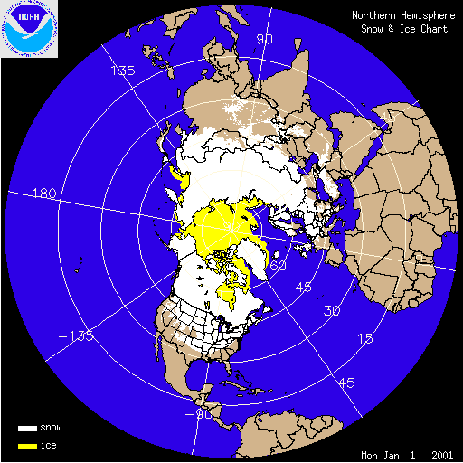

Weitere Datenübertragung Ihres Webseitenbesuchs an Google durch ein Opt-Out-Cookie stoppen - Klick!
Stop transferring your visit data to Google by a Opt-Out-Cookie - click!: Stop Google Analytics
Cookie Info. Datenschutzerklärung
Altbau und Denkmalpflege Informationen Startseite
Energiespar- und Klimaseite
Maria Ackermann, Lawalde-Lauba: Klimawandel und Klimalügen"

KLIMAFAKTEN UND KLIMALÜGEN 20
Zum Ökoterrorismus durch
Energiesparzwang und Klimaschutzerpressung
(aktualisiert 12.01.08)
Inhalt
1 Einleitung: ein
Mailwechsel mit einem anonymen Klimaterroristen
2 Geht es um Energiesparen? Umweltschutz?? CO2??? Welterlösung????
3-7 Medienmanipulation 1 2
3 4 5
8-10 Versiegende Energiequellen? 1 2 3
11-39 Vergebliche
Liebesmüh besorgter Bürger aus dem
Ökowiderstand 1 2 3 4 5 6 7 8 9 10 11 12 13 14 15 16 17 18 19
20 21 22 23 24 25 26 27 28 29
40-51 Dipl.- Met. Dr. Wolfgang Thüne gegen den
Treibhausschwindel 1 2 3 4 5 6 7 8 9 10 11 12
52-54 Dämmtechnik - Ökologie und Ökonomie 1
2 3
55-59 Wer ist
schuld am Klimawandel? 1 2 3 4 5
60-62 CO2-Emissions-Zertifikathandelsterror 1 2
3 (mit INFAS/FAQ-Bundestagsumfrage)
63 Das Klimaschutz-Quiz
64 Aus dem Brennstoffspiegel
65 Rückversicherung und Klimapropaganda
66-67 Ökos Pro Atomkraft 1 2
68-73 Ökoterrorismus
- Die Grüne Bewegung 1 2 3 4 5 6
20 Ökoterrorismus - Vergebliche Liebesmüh besorgter
Bürger aus dem Ökowiderstand 10
Mail an den Landwirtschaftsminister von Mecklenburg-Vorpommern
Date: Tue, 17 Jul 2007 15:48:16 +0200
Subject: Ihr toller Vorschlag zur CO2-Abgabe
From: "tg-Goehler@t-online.de"
To: info@till-backhaus.de
Sehr geehrter Herr Dr. Backhaus,
mit Entsetzen las ich heute Ihren populistischen Vorschlag des CO2-Ablasses für M/V-Urlauber
"CO2-freie Ferien".......
Mir ist unklar, wie sich ein promovierter Mensch wie Sie, den ich gerade als netten engagierten
Minister sehr schätze, in die unwissenschaftliche Klimadebatte involvieren lässt. Als wissenschaftlich gebildete Persönlichkeit sollten doch Ihre Entscheidungen von
fundierten Kenntnissen und nicht von Ideologien getroffen werden.
Ich weiß nicht,ob Sie über die Bedeutung des CO2 überhaupt eine Ahnung
haben. Als Landwirt muß Ihnen doch die positive Auswirkung
dieses Stoffes auf die Landwirtschaft bekannt sein. Oder wissen Sie
etwa nicht, dass der seit der industriellen Revolution
natürlich gestiegene CO2-Gehalt die Erträge
bei z. B. Weizen oder Gemüse hat steigen lassen und
daß CO2 Pflanzen widerstandsfähiger macht.
Wieso beteiligen Sie sich an dieser globalen Verblödungsideologie ???
Erinnern Sie sich noch an Ihren Mathelehrer ? Was schrieb der denn immer unter die Ergebnisse?
w.z.b.w. oder q.e.d. (was zu beweisen war / quod erat demonstrandum)
Beweisen Sie mir und Ihren Bürgern doch bitte mal nach wissenschaftlicher Manier diesen
ganzen Klimaschwindel oder haben Sie direktes Interesse an der Verdummung der Massen.
Mensch, Herr Minister, das hatten wir doch vor 17 Jahren abschaffen wollen - jetzt machen Sie da auch noch mit.
Wo schadet denn bitteschön CO2? Wo gibt es denn einen "Treibhauseffekt" ? Wie hoch ist eigentlich Ihr CO2-Ausstoß
beim atmen? Ist das IPCC eine wissenschaftliche oder politische Institution? Ist es nicht so, wenn alle das gleich schwafeln ist was
faul daran?
Glauben Sie, daß in Zeiten von Internet und besserer Bildung die Leute nicht bald dem ganze
Schwindel auf die Schliche kommen? Was passiert dann mit Ihrem Image?
Wäre es nicht besser, daß Sie als Doktor mal mit
einer Aufklärungskampagne anfangen? Endlich mal eine
Initiative starten, die von M/V ausgeht?
Ich jedenfalls versichere Ihnen als physikalisch und thermodynamisch gebildeter Ingenieur,
daß ich gegen diese gesamte Klimaverdummung mit allen
wissenschaftlichen Fakten kämpfen werde und jeden davon
abhalte freiwillig noch mehr Geld für diesen globalen Unfug auszugeben.
Nichts gegen Ihr Ansinnen lokalen Umweltschutz zu fördern aber bitte nicht mit solchen
unglaubwürdigen Mitteln.
Da ich annehmen muß, daß Sie mangels ausreichendem Wissen solchen Unfug verbreiten,
habe ich Ihnen im Anhang ca. 40 Informationen zu der "Gefahr" des CO2 beigelegt. Vielleicht nutzen Sie mal Ihren gesunden
Menschenverstand und fragen einige echt unabhängige
Wissenschaftler dazu. Dazu wünsche ich Ihnen schon jetzt spannende Unterhaltung - Sie werden staunen.
Gern stehe ich zu weiteren Diskussionen zur Verfügung
In der Hoffnung, daß Sie das alles mal durchdenken und handeln verbleibe ich
mit besten Wünschen für persönliche Gesundheit und Erfolg
Dipl.-Ing. Thomas Göhler
www.GoehlerGruppe.de
Dolgener Str. 6
18299 Groß Lantow
Anlage:
Die globale CO2 -Verblödung
Wussten Sie schon, dass.....
...das Spurengas CO2 der Luft gerade mal 0,038 % ausmacht, die anderen Teile Sauerstoff (21 %), Stickstoff (78 %),andere Gase wie
Methan, CH, Lachgas, N2O,He, H2 usw.– trotz Mensch, Kuh, Ölheizung, Kamin ...
... der CO2-Anteil von menschlichen Aktivitäten an diesem
CO2-Gehalt der Atmosphäre nur 3,2 % ausmacht (wir beeinflussen
den Gehalt um 0,0012 %) und damit jeglicher Klimaeinfluß durch
Reduzierung absurd ist.
...die Absorptionsfähigkeit von CO2 für
Wärmestrahlung (vgl. Fraunhofersche Linien) so winzig ist,
dass jegliche Wärmestrahlung durch die Luft durchgeht, auch
wenn wir eine höhere CO2-Konzentration hätten.
...gerade weil diese Absorptionsfähigkeit, die den angeblichen
„Treibhauseffekt“ bewirken soll, so unwesentlich
ist, dass aus dem Weltraum schärfste Wärmebildaufnahmen der Erdoberfläche verzerrungsfrei möglich sind.
...das Gas selbst bei höherer Konzentration in den
Luftschichten nicht zu einem Temperaturanstieg sondern zur Abkühlung auf der Erde beitragen würde –
nachgewiesen durch Vulkanasche mit vergleichsweise hoher Absorption, die immer für Abkühlung sorgt...
...Kohlenstoffdioxid ein Molgewicht von 44 und Luft eines von 29
hat und es somit schwerer ist, sich damit immer in
Erdbodennähe sammelt (in Gärkellern oder
Silagetürmen heißt das CO2-See oder man erinnere
sich an die „schweren“ Dunstglocken von Bitterfeld
vor 1990 oder über den Megastädten) und
damit einerseits unsere Pflanzendecke ernährt,
tatsächlich aber auch regional die Atemluft in
Bodennähe verschmutzt und in den oberen Luftschichten im
Gehalt absinkt, dadurch gar nicht klimawirksam sein kann,
weil durch diese geringe Konzentration gar keine eventuelle
Wärmerückstrahlwirkung entfaltbar wäre...
...die CO2-Konzentration aus bisher nicht geklärten
Gründen immer (in allen Erdwarm - oder Kaltzeiten
)dem Temperaturanstieg in einem Abstand zwischen 500 bis 1500 Jahren
folgt und nicht vorauseilt- also erst wird es warm, dann kommt mehr
CO2 und nicht umgekehrt- Sie das beim schütteln einer
Mineralwasserflasche mit Gas selbst erleben können...
...es oben in der Atmosphäre, wo angeblich warmes
CO2 auf die Erde zurückstrahlt, nicht +70 Grad C
sondern eiskalt ist und nie ein kalter Körper an wärmere Körper Energie abgeben kann...
...es das Abschmelzen der Eisschilde in Grönland, die Eisdynamik, Meereserwärmung, Überflutungen, kalte
Winter, heiße Sommer, Tornados, Meeresspiegelanstiege usw. im Erdzeitalter schon immer gab und geben wird, auch ohne Mensch
– wir dies nur deshalb subjektiv verstärkt wahrnehmen, weil wir medial über jedes Lüftchen auf
dem Globus „informiert“ werden und unser gefühlter Zeit- und Vergleichshorizont zu den
„Wetterkatastrophen“ ein viel kürzer ist als der der Klima- bzw. Erdgeschichte.
Hierzu ein Nachtrag - GIF-Bild von Mathias Bumann, Datenquelle NOAA:

Nördliche Hemisphäre, Arktis, Nordpol - Eis und Schnee-Bildung im Wandel der Jahrsezeiten
...Grönland „Grünland“ heißt, weil vor ca. 900 Jahren dort Vikinger kein Eis,
sondern fruchtbares Grünland vorfanden und sogar in Norwegen und England Wein angebaut wurde...
...nur die aus Wasserdampf bestehende Wolkendecke den Strahlungsausgleich des Bodens mit dem All behindert, selbst der
höher konzentrierte Wasserdampf der kalten und durch die Sonne erhitzen Wolke die Erde nicht aufheizen kann...
...die angeblich gemessene aufheizende Gegenstrahlung des CO2 gar nicht messbar ist, da nur die
Gesamtwärmestrahlung gemessen werden kann und man den angeblichen CO2-Anteil mit einer
„Formel“ „ herausgerechnet“ - besser erfunden - hat...
...jemals Ihr Physikbuch irgend etwas zur CO2 Wirkung auf das Erdklima geschrieben hat...
... die CO2-Theorie ein Werk von Svante Arrhenius und Konsorten ist, diese jedoch damit, was logischer
wäre, eine Eiszeit vorhersagen wollten...
... selbst bei Umsetzung der Kyoto-Verpflichtung durch alle Unterzeichner und Zutreffen der Klimathese sich die
Erdtemperatur nur um gerade mal 0,07 °C bis 2050 senken lassen würde, und
möglicherweise auch deshalb die USA-Regierung dagegen ist...
...Bundeskanzlerin Dr. Angela Merkel in Physik promoviert hat und all diese physikalischen Fakten kennen müsste ... oder ist die
Leugnung von Physik eine neue Ideologie oder Religion?
... der Initiator bzw. Autor von „Live Earth“ und
„Eine unbequeme Wahrheit“ ( besser „Eine bequeme Lüge“) seit 2001
selbst Hedgefondmanager ist, er sich durch Vorträge vor Firmen
und Hedgefondgesellschaften daran beteiligt, mittels der Klimakampagne
ein neues Gebiet für Megaprofite für Banken u.
ä. zu installieren – den CO2-Emmissionszertifikatehandel - und dass Al Gore mit David
Blood 2004 den „Generation Investment Trust“
gründete, der massiv an diesem CO2-Zertifikatehandel
beteiligt ist, die teuer unter Emittenten versteigert und auf
die sündigen Bürger in einer Art Ablaß umgelegt werden...
... die komplex ausgebaute Meteorologie - und Wetterforschung große Abhängigkeiten des atomaren
Komplexes hat, da ihre Vorhersagen zu Zeiten des Kalten Krieges für die Prognosen des atomaren Fallout
notwendig waren und nun Ozonloch und Treibhauseffekt der Ersatz für Atomkriegsängste darstellen, damit das
täglich diskutierte Wetter eine bessere kollektive Angstpsychose bewirken kann als jeder gelegentliche Terroranschlag, die
Klimapsychose damit permanenter wirkt, weil nun jedes Unwetter auf der
Welt viel häufiger als „treibhausverursacht“ postuliert werden kann..
... die CO2-Hysterie auch ein „Marketingprodukt“ der Kernkraftlobby ist um mit
Ihrer CO2-freien Energiegewinnung die vom Abschalten bedrohten
Meiler stehen zu lassen und die Angst vor dem CO2 größer werden soll als die vom Atom....
...Meteorologen trotz massenhafter Computer heute noch nicht mal das regionale Wetter für einen Monat vorhersagen können,
die gleichen Computer aber die Temperatur für über 50 Jahre genauer ermittelt haben sollen...
...die angebliche vom Weltklimarat IPCC dargestellte Erderwärmung aus 400 massiv manipulierten Computermodellen so
hin gerechnet wurde und nur ein Parameter reicht das ganze Modell zu einer Erdabkühlung hin zu manipulieren und dass z. B. bei
einem immer wieder vorgeholtem Diagramm zur Darstellung der Erwärmung in den letzten hundert Jahren der
Startpunkt einfach von 1901 auf 1906 verschoben wurde, weil man sonst gar keinen Trend erkennen könnte, selbst die
angebliche Erwärmung bei der manipulierten Kurve von 0,74 °C in etwa der Messtoleranz der dafür eingesetzten Wetterhäuschen
(Ablesegenauigkeit 0,7 ° C) entspricht....
...die Durchschnittstemperatur im Mittelalter etwa um 2 °C
höher lag als heute, sie später wieder fiel und heute
wieder steigt ohne, dass es damals massenhaft Menschen auf der Erde gab
und dass auch in den letzten hundert Jahren regelmäßige Thermoschwankungen auftraten und
künftig auftreten werden...
...der rein statistische Wert „Globaltemperatur“ (15° C) von 1994 mit gerade mal 1400
Meßstationen ermittelt wurde und dass wenn man diese gleichmäßig über die 510
Millionen km² Erdoberfläche verteilen könnte, was durch die Ozeane aber nicht geht, so
müsste jeder dieser Werte für ein Gebiet der Fläche Deutschlands stehen.
...der IPCC Forscher Prof. Stephen Schneider 1976 schon für das Jahr 2000 eine Eiszeit voraussagte und heute eine Warmzeit
prognostiziert...
... egal mit welchen Daten McIntyre & McKitrick das nachgebaute Computermodel der „Hockeystick
–Kurve“(siehe IPCC Bericht von 2001) fütterte, selbst mit Zufallszahlen, und zig tausende
mal durchlaufend, immer wieder die gleiche Kurve herauskam, der Computer immer auf den Schlenker hin programmiert war und dem IPCC
sogar diese Irreführung bekannt ist...
...das MPI Hamburg betonte, nicht das Klima vorherzusagen, sondern
lediglich Entwicklungsmöglichkeiten des Klimas in der
Zukunft und damit jede Börsenspekulation
–hier hat man wenigstens exaktere Zahlen aus der
Vergangenheit- genauer ist, es aber dennoch Spekulation oder eher
Kaffeesatzleserei bleibt, mit denen neue Gesetze, wie
Energieeinsparverordnungen, Ökosteuer und politische
Entscheidungen samt Konsequenzen begründet werden
– wie gesagt: Gesetze werden auf Spekulationen
begründet. Das ist als spielten Sie Lotto und da die
Wahrscheinlichkeit Millionär zu werden in egal welch geringer
Höhe da ist, wird von Ihnen vorweg schon eine extra eingeführte 20%ige Steuer gefordert und abgebucht...
...es tatsächlich einen CO2-Anstieg in den letzten hundert Jahren von 0,028 % auf 0,038 % gab, er unstrittig mit der
Industrialisierung einherging aber genauso viel natürliche noch unbekannte Prozesse dafür verantwortlich sein
können, da auch ohne Industrie der CO2 Gehalt der Luft immer schwankte.
... ein bestimmender Parameter, die Klimasensitivität für CO2, der „CS-Wert“
(Temperaturerhöhung der Erde durch CO2),gänzlichst unbekannt ist und für
Simulationsrechnungen eben mal so mit 1,5 bis 4,5 Grad C herbeigeschätzt und
festgelegt wurde - die interne „Toleranz“ damit selbst bei einer Ungenauigkeit
von enormen 200 % liegt- und aufgrund von Schätzungen noch nicht mal vorhandenen Wissens
Klimapolitik betrieben wird...
...die Gletscher z. B. in den Alpen und einige in Grönland abschmelzen, es jedoch 160.000 Gletscher gibt – meistens in
der Antarktis, Arktis und Grönland- nur 2% davon schmelzen,
die anderen 98% nehmen sogar zu - so in Skandinavien, Neuseeland und der Antarktis- sowie die Gebirgsgletscher weniger als 5%
der Eismasse der Erde ausmachen...
...,wenn theoretisch auch das schwimmende Eis am Nordpol abschmelzen und die Wassertemperatur dort auf bis +4 °C ansteigen
würde, das Wasser im Volumen kleiner würde da es bei 4 ° C seine höchste
Dichte hat und der Meeresspiegel nicht steigen sondern sinken würde.
... der Meeresspiegel allerdings steigt und zwar schon immer, z. B. seit den letzten zehntausend Jahren um ca. 12 cm, seit 1860
global um nur 2,5 mm / Jahr, allerdings der Erdboden ebenfalls steigt und fällt und das das möglicherweise damit
kompensiert wird...
...der größte Temperaturbeeinflusser der atmosphärische Wasserdampf ist, dieser Anteil angestiegen ist
und als ein Resultat dessen es zu einer Ausweitung der Grünfläche zu Lasten der Sahara kommt, die in den
letzte 20 Jahren um 300.000 km² schrumpfte...
...ein wärmeres Klima mit höherem CO2-Gehalt für das Leben sogar besser als ein kaltes
wäre, sonst würde man zur Beschleunigung des
Pflanzenwachstums diese in Kühlhäuser stellen und
nicht in warme Treibhäuser mit CO2-Anreicherung und
man mit wärmerem Klima immer bessere Ernten hatte als mit
kaltem, sich damit die Nahrungsmittelversorgung der Welt noch
verbessert..., ganz abgesehen von geringerem Heizenergieverbrauch...
...auch die angeblichen „Klimakiller“ Methan und FCKW (siehe Ozonlüge) überhaupt keinen
Einfluß auf die Erdatmosphäre haben, es nicht mal einen natürlichen „Treibhauseffekt“ gibt,
weil es ein stets offenes atmoshp. Strahlungsfenster gibt, welches sich nicht mal mit einer reinen
CO2-Atmosphäre schließen ließe.
...nicht ein „Treibhauseffekt“ die Erde lebenswert macht (sonst würde er z.B. auch die Antarktis
„beheizen“) sondern neben anderen z.B. die wechselnde Entfernung zur Sonne, der durch Rotation
ständige Temperaturwechsel, die durch Kugelgestalt ständig unterschiedlichen Strahlungseinfallwinkel und der mit
all dem einhergehenden ständig variierenden Wärmemassenbewegungen um den Globus.
...die gesamte Menschheit auf der Erde, wenn man 4 Personen pro m² nimmt, gerade mal zu 60%in die Fläche des
Saarlandes passt, was wiederum gut 30.000 mal auf die bebaubare Erdoberfläche geht - das nur mal zur
Verhältnismäßigkeit von Zahlenspielen...
...sehr wahrscheinlich die Sonnenaktivität und noch
nicht bekannte Ursachen für die Klimawechsel verantwortlich
sind und der Mensch auf diese überhaupt nicht
Einfluß nehmen sondern sich nur vorbereiten und davor schützen kann...
...nicht, wie uns Medien weis machen wollen, die Mehrheit der
Wissenschaftler im Konsens mit der Klimaspekulation ist sondern der
überwiegende Teil dies strikt ablehnt jedoch mangels
Sensationsinteresse, gefestigtem Lobbyistentum und
politischem Desinteresse medial nur schwer zu Wort kommt...
...die überwiegende Mehrheit der Bevölkerung samt
haufenweise Prominenz, durch Unkenntnis oder besser Dummheit (auch im
Land der Dichter und Denker) bezüglich naturwissenschaftlicher
Prozesse alles glaubt, was man ihnen sagt, teilweise auch wider
besseren Wissens aus ökonomischen Interessen sich daran
beteiligt, und dass es nicht lange dauert, da wird eine Eiszeit oder
was anderes herbeigefaselt um andere wirtschaftliche und politische
Interessen zu vertuschen oder zu fördern...
... es Klimaideologisierungen schon im Mittelalter gab – dort
wurden z. B. die Juden verantwortlich gemacht – und man
hierzulande schon mehrmals mit ideologischer Pseudowissenschaft ein
ganzes, später halbes Volk, 12 bzw. 40 Jahre lang
eine angebliche gesellschaftliche Gesetzmäßigkeit weismachte...
...der größte Teil der Ökosteuer auf Kraftstoffe für die Füllung der Rentenkasse und
nicht -was bezüglich der Dringlichkeit logischer wäre - für Klimaschutz verwendet wird und
damit ökonomisch klar ist, was wirklich Priorität bei den Verantwortlichen hat...
...wir durch die Klimahysterie politisch und wirtschaftlich über die Medien stark beeinflussbar gehalten werden sollen,
wir durch kollektives Schuldanerkenntnis mit uns machen lassen sollen, was die Lobbyisten wollen, z. B. teils sinnlose zusätzliche
Wärmedämmung, Ökosteuern, Energiepässe, Ökoumlagen, Atomkraftwerke,
uneffiziente hochsubventionierte Solar und Windenergie uvm.
...die Menschen pro Jahr 2,2 Mrd. Tonnen CO2 ausatmen und man mittels der Klimaideologie bald die Besteuerung der Atmung
rechtfertigen könnte...
...ein kommender Börsencrash daher sicher durch eine New Energy - Blase eintreten könnte, weil die Menschheit
irgendwann dahinter kommt- aber das ist wohlwissend hier mal eine Spekulation...
...trotz dieser falschen Rechtfertigungen für neue Energien, Effizienz und dgl. glücklicherweise auch positive Erfindungen
und Veränderungen stattfinden, die dem Umweltschutz, dem Wohlstand und uns allen dienen...doch zu welchem Preis ?
...Sie daher kein schlechtes „Ökogewissen“ haben müssen, wenn
Sie mit Öl, Holz oder Gas - von denen ohnehin mehr da ist als
Sie glauben oder wissen – heizen, mit Ihrem Auto 200 km/h
fahren, nach Australien fliegen, grillen, Kuhmilch trinken, Laub
verbrennen, Sie im nicht mit brennbarem Verpackungsmaterial luftdicht sinnlos
„gedämmten“ Ziegelhaus mit dadurch bester Energiebilanz gesünderes Raumklima
genießen und, fast vergessen – CO2 ausatmen.
...es noch viel mehr solcher Fakten gibt und Sie sich über all
dieses Hintergrundwissen verschaffen können, indem
Sie z.B. in eine Suchmaschine „Treibhausschwindel“ oder ähnliche
Begriffe eingeben, ausreichend recherchieren bzw. einfach Ihren gesunden Menschenverstand samt, soweit vorhandenes
Grundwissen aus Physik-, Chemie- u. Biologiebüchern zu Rate ziehen...
Denken Sie darüber mal nach.
Dipl.Ing. Thomas Göhler*
www.goehlergruppe.de
*Der unabhängige Autor verfasste nach bestem Wissen und
Gewissen, verdient damit kein Geld, ist weder Politiker noch Mitglied,
Sponsor oder Extremist einer Partei, Vereinigung
oder Ökoinitiative, Kirche oder Sekte, verkauft
weder Energie, Kohle, CO2, Aktien, Versicherungen oder betreibt
ein Kraftwerk, ist nicht abhängig beschäftigt bei
irgend einem Interessenvertreter diverser Branchen oder
selbständiger Verkäufer für CO2-Folgeprodukte u. dgl., fährt keine spritfressenden
Autos, ist mal mehr mal weniger sparsam im Energieverbrauch, ist weder
Anwalt, Meteorologe oder Klimaexperte, allerdings wissenschaftlich gebildet, kerngesund und mit einer gehörigen
Portion Infragestellungskritik und ausreichend Intelligenz
gesegnet, um nicht auf jeden weltlichen und religiösen Quatsch
hereinzufallen- auch wenn er sich selbst weder in der Vergangenheit
noch Zukunft eine Garantie dafür geben kann- und handelt aus
rein privaten Gewissensgründen zum Wohle seiner Familie,
Freunde und einer besseren Zukunft, ist aber auch dankbar für
Hinweise, Anregungen und Irrtümern zu diesem Thema.
9.7.2007
Eine fiese Öko-Pressemitteilung der FDP veranlaßte
mein folgendes arg besorgtes Mailchen am 20.1.04:
pressestelle@fdp-bundestag.de
FDP-Pressemitteilung 19.1.04 - Brunkhorst: "Renewables2004"
- eine Chance
Besorgte Fragen an die FDP-Pressestelle
Mit allergrößtem und täglich
zunehmendem Befremden beobachte
ich seit längerem, wie maßgebliche Teile auch der
FDP am Abzocken
der Bürger mit betrügerischen "Energiealternativen",
die in Wahrheit keine sind, mitwirken.
Ihnen ist offenbar entgangen, daß die Mehrheit der
seriösen
Klimawissenschaftler - ich nenne hier nur das staatliche Geozentrum
Hannover
mit seinem Buch "Klimafakten" - klarstellt, daß CO2 niemals
auch nur ansatzweise als Klimakillergas fungiert. Demzufolge sind alle
auf angebliche CO2-Vermeidung angelegte Polit-Strategien, egal ob EEG,
Emissionshandel, EnEV, EU-Gebäude-Energieeffizienz-Richtlinie
usw.,
ein ausgemachter und inzwischen bald überall als
vorsätzlich
angeprangerter Betrug am Wähler und Nichtwähler.
Ganz davon abgesehen widersprechen die vorgeblich
ökologisch alternativen
Energien (RENEWABLES!!, daß ich nicht lache!) jeglichem
wirtschaftlichen
und sozialen Denken und sind technikgeschichtlich gesehen ein
Rückschritt
in die Steinzeit. Ihre staatliche und leider auch parteiliche
Begünstigung
verhöhnt alle Ansprüche an eine freiliberale
Marktwirtschaft.
So zerstört man unsere so mühsam erworbene Demokratie
und kehrt
zurück zur menschenfeindlichsten Form - die
(ÖKO-)Diktatur.
Was ist nur mit der FDP los, mit ins Horn der schlimmsten
gesellschaftsvernichtenden
Klima- und Energiebetrüger zu stoßen? Welchen
Wählerschichten
wollen Sie mit solch absurden Abzocktechniken noch den Garaus machen?
Viele
stehen ja nicht mehr zur Auswahl.
Trittin soll sich nach Brunkhorst also noch mehr für
die "Förderung
Erneuerbarer Energien einsetzen"! Dazu braucht er freilich die FDP
als Steigbügelhalter! Ist Ihnen denn tatsächlich
entgangen, um
was es sich bei Trittin und seiner gegen den redlichen Bürger,
Stromkunden
und Steuerzahler gerichteten Ökoideologie eigentlich handelt?
Unsere
CSU hat das schon gespannt, man wettert neuerdings gegen den
Windschwindel,
was das Zeug hät. Und auch in der CDU gibt es Durchblicker,
die die
Ökokriminalität und den Ökommunismus fest
bekämpfen.
Und die FDP? Wir wollen doch keine Blinden wählen, oder?
Will ausgerechnet die FDP rotgrüne Fieslinge und
Volksbetrüger
nun rechts und links überholen? Gibt es auch hier zu viel
"win-win-Situation"
in die bodenlosen Taschen der FDP-Ökos, gespeist von den
Ökoabzockern
rund um die hintergrundmächtigen Energiemonopolisten? Ist das
gar
die ultimative Fortsetzung des Parteispendenskandals, in dem dem
FDP-Ehrenvorsitzenden
vielleicht nicht ganz zu Unrecht nachgesagt wurde, die
gräßlichsten
und schmutzigsten Strippen gezogen zu haben?
Der Absturz aus dieser dünnen Luft wird
möglicherweise schrecklicher
als des armen Möllemanns Ende sein!
Mit Abscheu - ein ebenfalls abgesprungener FDP-Wähler
Konrad Fischer
PS. Wenn überhaupt Antwort, dann bitte keine
ökozerstanzten
Worthülsen. Die kenne ich nämlich schon auch aus
Ihren Pressemitteilungen
und da pfeif ich ebenso drauf, wie die FDP auf liberale Prinzipientreue.
Abdruck: Hier und da:
horst.krumpen@fdp.de, Schilder@fdp.de,
giersch@fdp-bundestag.de, gerhardt@fdp.de, westerwelle@fdp.de,
detlef_rostock@hotmail.com,
rh26@arcor.de, Wilfried.Heck@freenet.de, FSWEMedien@aol.com,
Uloebert2@aol.com,
helmut.alt@rwe.com, peter.finzel@worldonline.de, owildgruber@surfeu.de,
Ludwig_Lindner@t-online.de, JungkunzHans@aol.com,
j.schmidt-winsen@t-online.de,
heinz.thieme@gmx.net, hd@dmd-sc.de, hanna.thiele@web.de,
07936272-0001@t-online.de,
egbeck@t-online.de, Ufer-L@t-online.de, 091335371-0001@t-online.de,
dieterkraemer@t-online.de,
G.Gerlich@tu-bs.de, bundeskanzler@bundeskanzler.de,
friedrich.merz@cdu.de,
axel.fischer@bundestag.de, angela.merkel@cdu.de,
christian.wulff@stk.niedersachsen.de,
r.koch@ltg.hessen.de, peter.gauweiler@bundestag.de,
thomas.goppel@csu-landsberg.de,
karl-theodor.guttenberg@bundestag.de, michael.glos@bundestag.de,
redaktion@welt.de,
info@dsz-verlag.de, stefan.dietrich@faz.de, wolfgang.mauersberg@haz.de
Weiter
...
Altbau und Denkmalpflege Informationen Startseite
Energiespar- und Klimaseite
Verfassungsbeschwerde gegen das EEG
Treibhauseffekt,
Klimawandel, Ozonloch - profitable Lügen
Bücher gegen den Ökowahn (Crichton, Thüne, Gold u.v.a.)
www.eike-klima-energie.eu/
- Kritische Prüfung der Klimaschwindeleien
Bei mir gibts immer auch die Gegenseite, damit
der Leser selbst entscheiden kann, woran er nun glauben will:
Die "Widerlegung" der Klimaskepsis finden Sie z.B. hier:
Antworten
des Umweltbundesamts UBA auf häufig vorgebrachte Argumente
gegen den anthropogenen Klimawandel (mit vielen Links auf gleichgesonnene Webeiten)
Klimaschutz-Propaganda des Solarservers mit Christoph Bals (Germanwatch
e.V): Sabotage
am Klimaschutz/Das Ende der Sensation vom Klimamärchen
Texte zur
Rekonstruktion des Faschismus in Deutschland: Das
Antidiskriminierungs-Bundessicherheitshauptamt
<> Staat
- Provinz -
Kolonie?